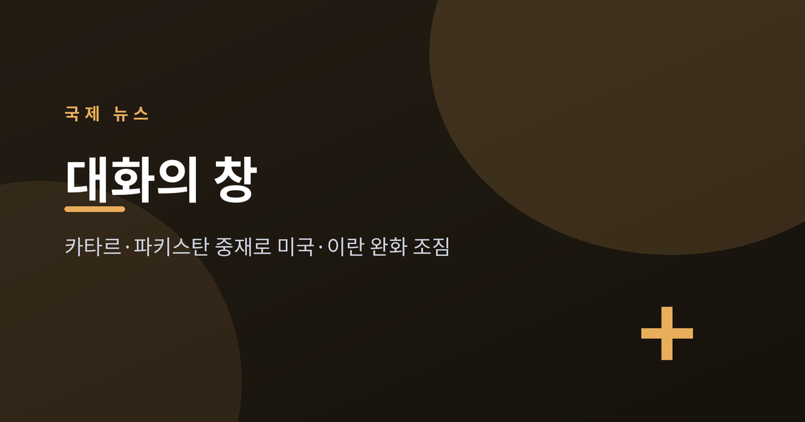
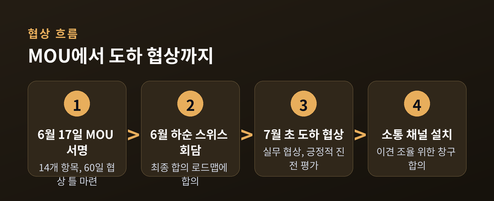
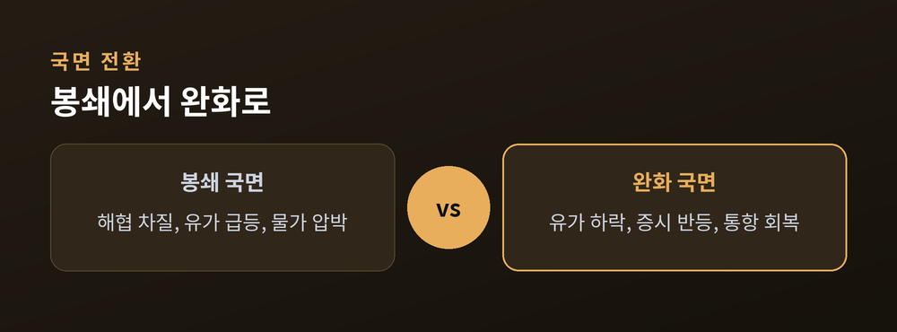
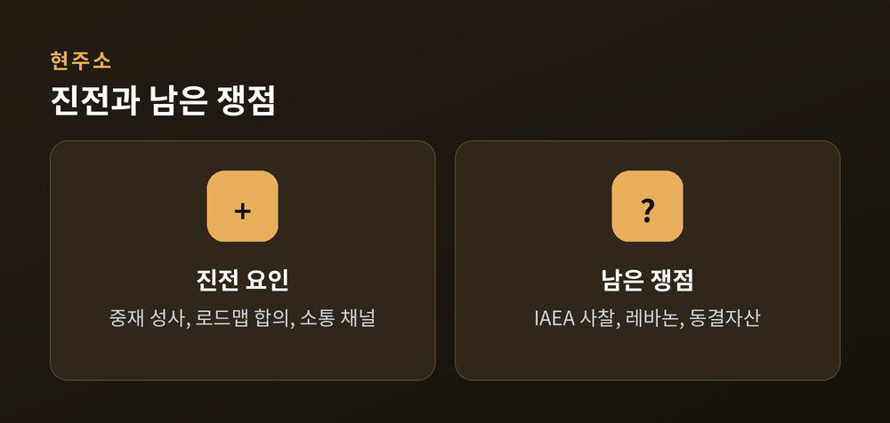

카타르·파키스탄 중재가 연 대화의 창

이번 글에서는 2026년 7월 초 미국과 이란의 협상 진전을 정리해 보겠습니다.
카타르와 파키스탄의 중재로 중동 정세에 완화 조짐이 나타났습니다.
무슨 일이 있었는지, 왜 중요한지, 앞으로 어떻게 될지 차분히 짚어보겠습니다.
지난 6월 17일, 미국과 이란은 14개 항목의 양해각서(MOU)에 서명했습니다.
호르무즈 해협의 항행 문제, 이란의 핵·미사일 프로그램, 제재 등을 60일간 다루기로 한 틀입니다.
이후 6월 하순 스위스 고위급 회담에서 양측은 "60일 내 최종 합의를 향한 로드맵"에 합의했습니다.
그리고 7월 1~2일, 카타르 도하에서 실무 협상이 이어졌습니다.
중재를 맡은 카타르는 이번 협상을 두고 "긍정적 진전을 이뤘다"고 밝혔습니다.
파키스탄도 같은 취지의 성명을 냈습니다.
다만 신중한 부분도 있습니다.
당장 항구적 평화로 이어졌다는 신호는 아직 보이지 않습니다.
핵 사찰과 레바논 문제 등은 여전히 이견이 남아 있는 상황입니다.

이 협상은 단지 두 나라만의 일이 아닙니다.
세계 경제, 특히 에너지 시장과 곧바로 맞닿아 있기 때문입니다.
호르무즈 해협은 전쟁 전 세계 원유·LNG의 약 20%가 지나던 길목입니다.
이 길이 막히자 국제에너지기구(IEA) 추산 하루 약 1,400만 배럴의 공급 차질이 생겼습니다.
에너지 값이 뛰면서 각국 물가에도 부담이 번졌습니다.
예전엔 봉쇄 우려로 유가가 치솟았습니다.
지금은 합의 틀이 발표되자 유가가 내리고 증시가 반등했습니다.
6월 중순 합의 틀 발표 직후 아시아 증시는 크게 올랐습니다.
한국 코스피는 한때 5%대 상승했고, 일본 닛케이도 비슷한 폭으로 뛰었습니다.
도하 협상 무렵 호르무즈 해협의 상선 통항도 눈에 띄게 회복됐다고 합니다.

낙관하기엔 이릅니다.
가장 큰 쟁점은 국제원자력기구(IAEA)의 사찰 접근권입니다.
IAEA는 합의문에 따라 사찰이 이뤄져야 한다는 입장입니다.
반면 이란 측은 국내법을 근거로 일부 시설 접근은 제한된다고 맞서고 있습니다.
같은 문서를 두고 해석이 갈리는 셈입니다.
레바논 문제와 동결자산 처리도 매듭이 남아 있습니다.
협상 도중 국지적 충돌이 오간 점도 불씨로 남습니다.
카타르는 다음 회담을 이란 내부 일정이 마무리된 뒤 이어가겠다고 했습니다.
60일이라는 시한 안에서, 대화가 이어질지 다시 흔들릴지가 관건입니다.

정리하면 이렇습니다.
전쟁의 문턱에서 대화의 창이 열렸고, 그 문을 연 것은 카타르와 파키스탄의 중재였습니다.
"휴전은 안도를 주지만, 그 자체가 해결은 아닙니다."
완화의 조짐이 곧 평화의 완성은 아닙니다.
다만 총성 대신 협상 테이블이 앞에 놓였다는 사실은, 지금으로선 분명한 진전이라 생각합니다.